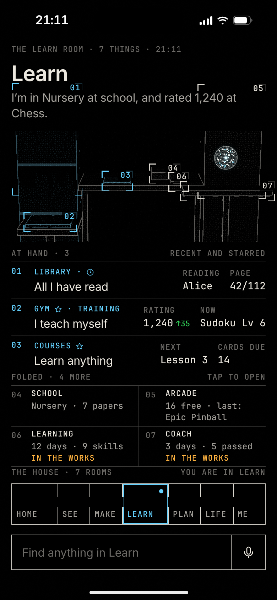
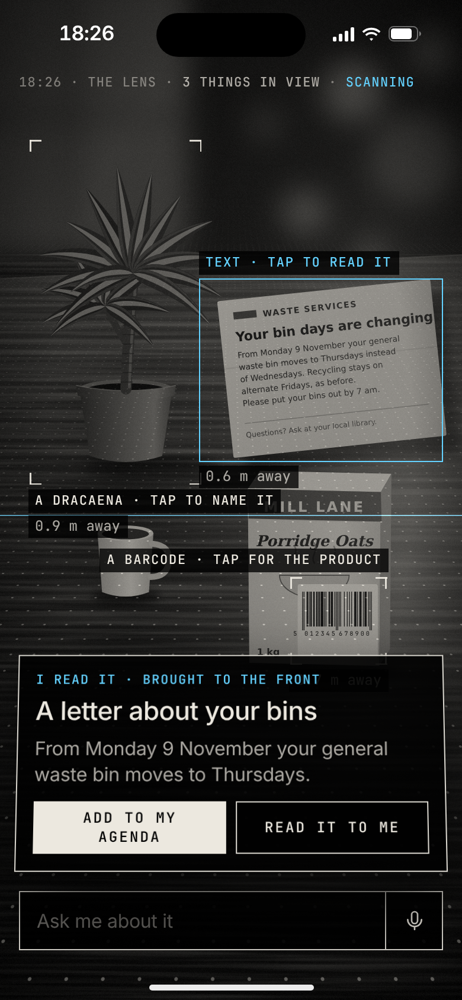
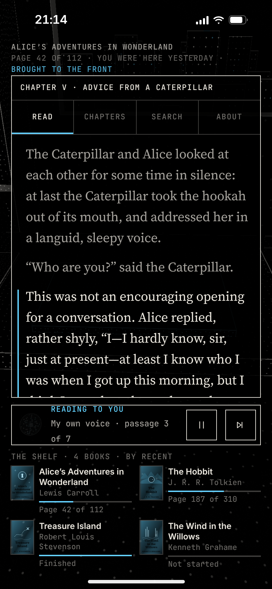
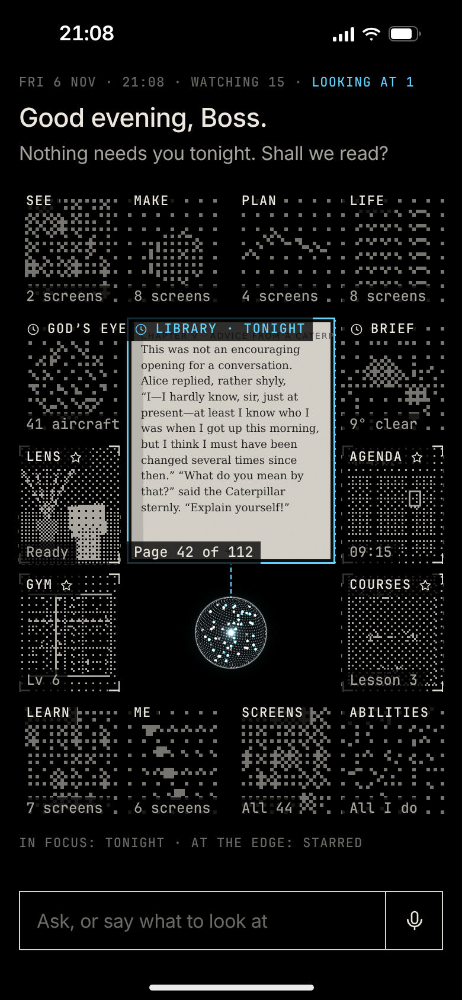
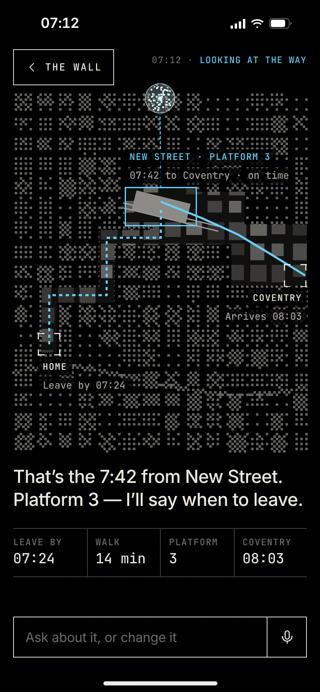
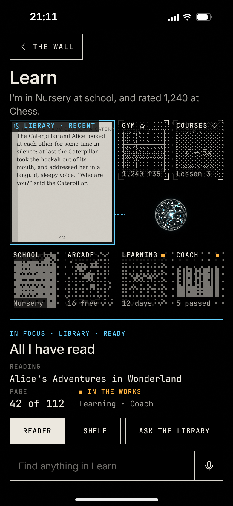
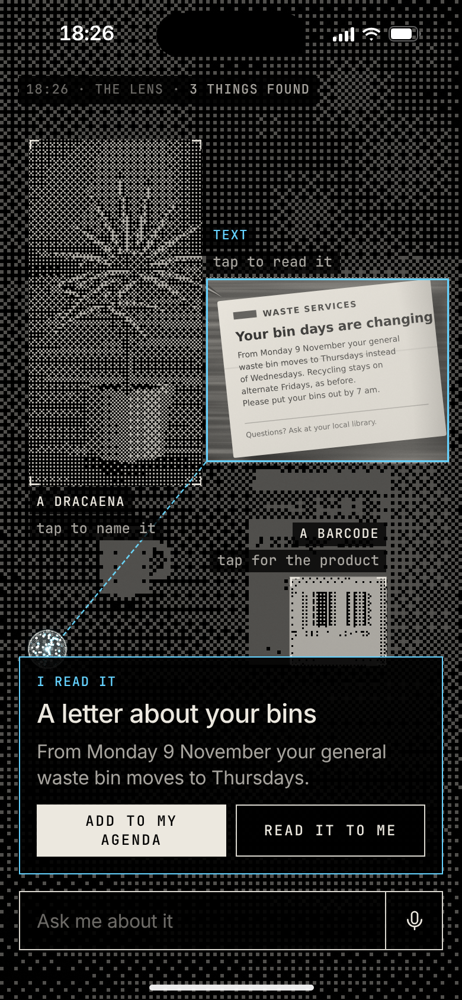
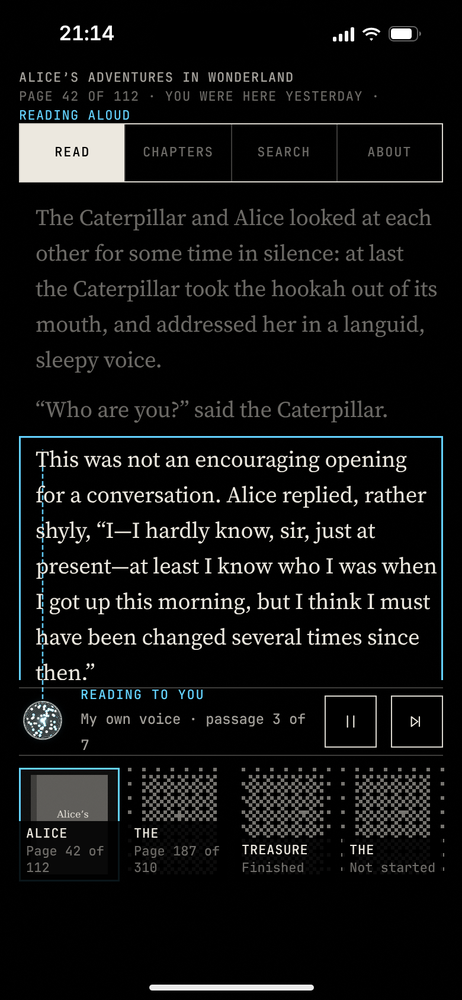

W1
The Scan
The phone is a window into a 3-D scan of a room where everything Ghosty does has its place; what you ask for is brought to the front.







The same five moments in each, then four frames of one transition: Home becomes the 7:42 from New Street · 390 × 844 · the Machine’s eye in all three, a different physics in each
The phone is a window into a 3-D scan of a room where everything Ghosty does has its place; what you ask for is brought to the front.



Everything Ghosty can see and do is plotted on one map round the orb; pinch is altitude, a typed word is a flight, the Stage is the deepest zoom.


The orb is an eye: what it is looking at is sharp, in a box, its line of sight drawn; everything else is there as grain.




